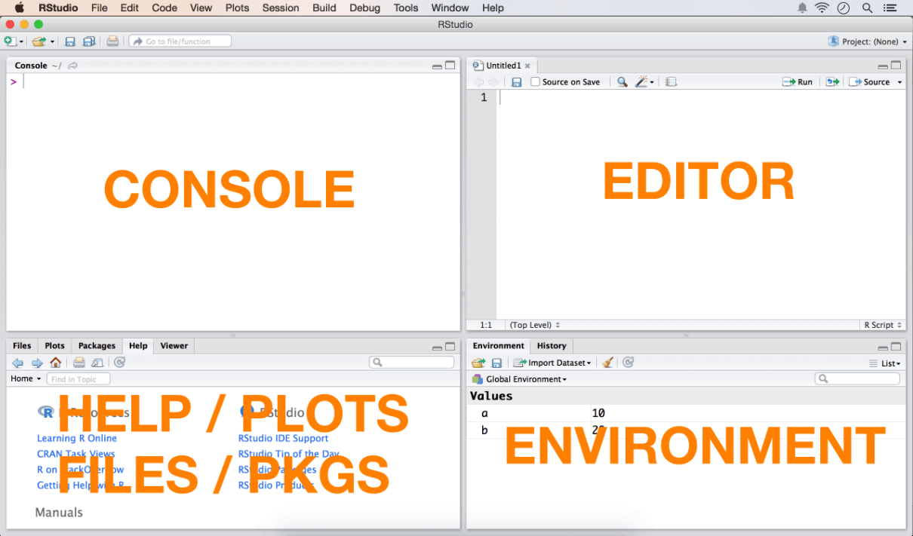

This is a beginner, non-programmer friendly guide to learn and understand the R language from scratch, giving a brief walkthrough of the most important parts of the language in plain english, intended to get you on board fairly quick.
I assume that you have R or RStudio installed and are ready to follow along, typing the codes in to your R console as you learn. So without further adieu lets jump right in.
Section 1
First Touch: R As A Calculator
Illustration of The Components of R Window

If not for anything else, the R console can be used as a built-in calculator. Open your R console and type the following in. You need not type in anything after the # symbol in your console because the hash # is a comment character. R ignores everything that comes after the #.
2 + 3 # the space around '+' is optionalThat prints out the number 5 as the answer in your console. Lets try some more.
2 * 3 #=> 6
sqrt(36) #=> 6, square root
log10(100) #=> 2, log base 10
10 / 3 #=> 3.3, 10 by 3
10 %/% 3 #=> 3, quotient of 10 by 3
10 %% 3 #=> 1, remainder of 10 by 3The Assignment Operator
The next thing you need to know about is R’s assignment operator. Unlike most other languages, R uses a <- operator in addition to the usual = operator for assigning values. So whenever you see a <- in R code, know that it just works like a = but in both directions. Here is an example for you to try out in your R console. Alternatively, you can use the R Editor to type in all 4 lines at once and press Cmd+R(on Mac) or Ctrl+R(on Windows) keys to run the selection or current line. In RStudio, use Cmd+Enter to Ctrl+Enter instead.
a <- 10 # assign 10 to 'a'
a = 10 # same as above
10 -> a # assign 10 to 'a'
10 = a # Wrong!. This will try to assign `a` to 10.Classes or Data types
In previous code, you may have noticed that there is no dedicated step to define the type of variable. R intuitively decides that in the background and assigns a class to the variable.
class(a) # numericBased on the value assigned to variable a, R decided to assign its class as a numeric. If you choose to change it as a character ’10’ instead of number 10, that can be done as follows:
a <- as.character(a)
print(a) # prints out the value of a
class(a) # characterFind out what happens when you try to convert a character to a numeric using as.numeric(). The next question naturally is what are the different types of classes available in R. The answer actually is infinite, since the users are free to define new classes, but here is some of most commonly used ones:
Variable Types
- character – Strings
- integer – Integers
- numeric – Integers + Fractions
- factor – Categorical variable where each level is a category
- logical – Boolean
- complex – Complex numbers
Data Types
- vector – A collection of elements of same class
- matrix – All columns must uniformly contain only one variable type.
- data.frame – The columns can contain different classes.
- list – Can hold objects of different classes and lengths
Some Miscellaneous but Important Items Before We Proceed . .
What is a R package and how to install them?
Upon your first install, R comes with a built-in set of packages which can be invoked directly from your R console. However, since R is a open-source language, anyone can contribute to its capabilities by writing packages. Over the years, these contributions have resulted in growing list of over 5k packages. Here is how you can install the packages from within R console:
install.packages("car") # install car package The above code will prompt you to select the CRAN mirror for which you can select one that is closest to your place. The dot(.) in install.packages is a part of its name and not two separate commands.
Now that the package is installed, you need to initialise it before you can call the functions and datasets that come with the installed package.
library(car) # initialise the pkg 'car'
require(car) # another way to initialise
library() # see list of all installed packages
library(help=car) # see info about 'car' pkgGetting Help
The easiest way to get help in R is using the ? operator. Just append a ? before the name of a function you want to get help, R will open find information about the function from the set of installed packages. If you want to search for it outside the installed packages, use ?? before the function name. ?? can also help search for partial and incomplete terms.
help(merge) # get help page for 'merge'
?merge # lookup 'merge' from installed pkgs
??merge # vague search
example(merge) # show code examplesWhat is a working directory and how to set up one?
A working directory is the reference directory from which R has direct access to read in files. You can read in and write files directly to the working directory without using the full file path. The directory names should be separated by forward slash / or double back slash \\ instead of \ even for a windows PC.
getwd() # gets the working directory
setwd(dirname) # set the working directory to dirnameHow to import and export data?
The most common and convenient way to bring in data to R is through .csv files. There are packages to import data from excel files(.xlsx) and databases, but that will not be covered here.
myData <- read.table("c:/myInputData.txt", header = FALSE, sep="|", colClasses=c("integer","character","numeric") # import "|" separated .txt filemyData <- read.csv("c:/myInputData.csv", header=FALSE) # import csv file
write.csv(rDataFrame, "c:/output.csv") # export R will intuitively find out what data type the columns in a data frame should be assigned. If you want to manually assign it, it can be set with the colClasses argument within read.csv(), which is in fact recommended as it improves the efficiency of the import process.
How to view and delete objects in your console ?
As you create new variables, by default they get store in what is called a global environment.
a <- 10
b <- 20
ls() # list objects in global env
rm(a) # delete the object 'a'
rm(list = ls()) # caution: delete all objects in .GlobalEnv
gc() # free system memoryHowever if you choose, you can create a new environment and store them there.
rm(list=ls()) # remove all objects in work space
env1 <- new.env() # create a new environment
assign("a", 3, envir = env1) # store a=3 inside env1
ls() # returns objects in .GlobalEnv
ls(env1) # returns objects in env1
get('a', envir=env1) # retrieve value from env1Lets talk about what happened in the above code. Think of an environment as a container that holds objects(variables). The outermost main container is called the global environment(globalenv()). This is the default place will R will store all objects that you create. You can place as many objects as your computer memory will allow it to hold. The point to note is that, since containers are also objects, you can put any number of containers(environments created by new.env()) inside the main container(globalenv()). But, you can look into and access the objects within these inner containers, only by explicitly telling R where you want to look. This is what you did in the last two lines of code above.
Section 2
Vectors
How to create a vector?
Vectors can be created using the combine function c(). In order to create vector, you need to feed into c(), all the elements that you need to hold in that vector. Also, vectors can hold data of one type only – like character, numeric, logical. If you try to create a mixture of data types within a vector, say characters and numerics, one of the type will be converted to the other. Now Lets create some.
vec1 <- c(10, 20, 15, 40) # numeric vector
vec2 <- c("a", "b", "c", NA) # character vector
vec3 <- c(TRUE, FALSE, TRUE, TRUE) # logical vector
vec4 <- gl(4, 1, 4, label = c("l1", "l2", "l3", "l4")) # factor with 4 levelsThere are two things you would have noticed. In the exercise 6.a, the class of ‘one_to_6’ was still numeric and not a new ‘vector’ class. Secondly, when you tried to create a mixed vector, all your numbers were automatically converted to characters to give you a ‘character’ class, which is expected as it makes sense to convert the number 1 to character “1”, but the opposite is not true for character “a”.
How to reference elements of a vector?
Elements of a vector can be accessed with its index. The first element of a vector has the index 1 and the last element has an index of value length(vectorName).
length(vec1) # 4
print(vec1[1]) # 10
print(vec1[1:3]) # 10, 20, 15At this point, I would like you to learn, how to initialise a vector to a certain length. But why initialise a vector when you can iteratively add(append) elements to it, especially in a language where you dont even need to declare variables?
The reason is: It saves processing time. When you initialise a vector to hold, say 100 elements, that much space is almost instantly reserved for the vector in your computer’s memory. You can later fill in those spots by indexing the vector, like we just saw. It simply takes more processing time to iteratively append elements to your vector, especially when your vector gets really big.
Here is how to initialise a numeric vector:
numericVector <- numeric(100) # length 100 elementsHow To Manipulate Vectors
Subsetting
logic1 <- vec1 < 15 # create a logical vector, TRUE if value < 15
vec1[logic1] # elements in TRUE positions will be included in subset
vec1[1:2] # returns elements in 1 & 2 positions.
vec1[c(1,3)] # returns elements in 1 & 3 positions
vec1[-1] # returns all elements except in position 1.Sorting
sort(vec1) # ascending sort
sort(vec1, decreasing = TRUE) # Descending sort Sorting can also be achieved using the order() function which returns the indices of elements in ascending order.
vec1[order(vec1)] # ascending sort
vec1[rev(order(vec1))] # descending sortCreating vector sequences and repetitions
The seq() and rep() functions are used to create custom vector sequences. The rep() function can be used to repeat alphabets also.
seq(1, 10, by = 2) # diff between adj elements is 2
seq(1, 10, length=25) # length of the vector is 25
rep(1, 5) # repeat 1, five times.
rep(1:3, 5) # repeat 1:3, 5 times
rep(1:3, each=5) # repeat 1 to 3, each 5 times.How To Remove Missing values
Missing values can be handles using the is.na() function which returns a logical vector with TRUE in positions where there is a missing value(NA)
vec2 <- c("a", "b", "c", NA) # character vector
is.na(vec2) # missing TRUE
!is.na(vec2) # missing FALSE
vec2[!is.na(vec2)] # return non missing values from vec2Sampling
set.seed(100) # optional. set it to get same random samples.
sample(vec1) # sample all elements randomly
sample(vec1, 3) # sample 3 elem without replacement
sample(vec1, 10, replace=T) # sample with replacementSection 3
Data Frames
Creating Data frame and accessing rows and columns
Data frames is a convenient and popular data object to perform various analyses. Import statements such as read.csv() imports data into R as a data frame, so its just convenient to keep it that way. Now lets create a data frame with the vectors we’d created earlier.
myDf1 <- data.frame(vec1, vec2) # make data frame with 2 columns
myDf2 <- data.frame(vec1, vec3, vec4)
myDf3 < data.frame(vec1, vec2, vec3)Built-in Datasets and Basic Operations
R comes with a set of built-in data frames. For further illustrations we will use the airquality data frame.
library(datasets) # initialize
library(help=datasets) # display the datasetsThe below set of codes will be frequently used if you are going to be playing around with data. So I highly recommend you to practice these once over and over to get a good handle over them.
class(airquality) # get class
sapply(airquality, class) # get class of all columns
str(airquality) # structure
summary(airquality) # summary of airquality
head(airquality) # view the first 6 obs
fix(airquality) # view spreadsheet like grid
rownames(airquality) # row names
colnames(airquality) # columns names
nrow(airquality) # number of rows
ncol(airquality) # number of columnsAppend data frames with cbind and rbind
Lets append dataframes column wise cbind and row wise rbind.
cbind(myDf1, myDf2) # columns append DFs with same no. rows
rbind(myDf1, myDf1) # row append DFs with same no. columnsSubset Data frame with number indices, subset() and which() methods
myDf1$vec1 # vec1 column
myDf1[, 1] # df[row.num, col.num]
myDf1[, c(1,2)] # columns 1 and 3
myDf1[c(1:5), c(2)] # first 5 rows in column 2Subsetting rows and columns can also be done using subset() and with which() functions. which() returns a vector of column or row indices that satisfies the condition. Let check this out with an example.
Below is a code that drops the Temp column from airquality data frame and returns only those observations with Day=1. Note that the which() is an independent function, therefore, the full object name must be used. Just which(Day==1) will not work, since there is no variable called Day defined.
subset(airquality, Day == 1, select = -Temp) # select Day=1 and exclude 'Temp'
airquality[which(airquality$Day==1), -c(4)] # same as aboveSampling
Sampling your data into training(data on which models are built) and test(known data on which models are tested) is a common activity. Lets see how this can be done by creating a randomised 70:30 training and test sample from airquality.
set.seed(100)
trainIndex <- sample(c(1:nrow(airquality)), size=nrow(airquality)*0.7, replace=F) # get test sample indices
airquality[trainIndex, ] # training data
airquality[-trainIndex, ] # test dataWhat was that! Here we create a 70% random sample of the row indices of the airquality data frame and use it to make the training and test samples. As you can see, the arguments that are passed to the sample() function are computed from within. For example, we needed a 70% sample, size = nrow(airquaity) * 0.7, will compute 70% of the number of rows in airquality for the size argument. Moreover, we are actually defining the ‘sample’(1:nrow(airquality)) itself within the function only. Though this is a ‘unclean’ method of writing code, you get the taste of flexibility and control that the language has to offer.
Merging Dataframes
Data frames can be merged by a common column variable. The data frames need not be necessarily sorted before performing a merge. If the ‘by’ column has different names, they can be specified with the by.x and by.y. The inner / outer join, left join and right join can be accomplished with all, all.x, all.y arguments of merge(). Check out more on example(merge) in your R console.
merge(myDf1, myDf2, by="vec1") # merge by 'vec1'With the dataframes created from code below, perform the various merge operations.
set.seed(100)
df1 = data.frame(StudentId = c(1:10), Subject = sample(c("Math", "Science", "Arts"), 10, replace=T))
df2 = data.frame(StudentNum = c(2, 4, 6, 12), Sport = sample(c("Football", "Tennis", "Chess"), 4, replace=T))Section 4
The paste function
paste() is a way to concatenate strings and customise with delimiters. With a clear understanding it comes handy to create long and complicated string patterns that can be dynamically modified. Try out these examples in your R console.
paste("a", "b") # "a b"
paste0("a", "b") # concatenate without space, "ab"
paste("a", "b", sep="") # same as paste0
paste(c(1:4), c(5:8), sep="") # "15" "26" "37" "48"
paste(c(1:4), c(5:8), sep="", collapse="") # "15263748"
paste0(c("var"), c(1:5)) # "var1" "var2" "var3" "var4" "var5"
paste0(c("var", "pred"), c(1:3)) # "var1" "pred2" "var3"
paste0(c("var", "pred"), rep(1:3, each=2)) # "var1" "pred1" "var2" "pred2" "var3" "pred3Dealing with dates
dateString <- "15/06/2014"
myDate <- as.Date(dateString, format="%d/%m/%Y")
class(myDate) # "Date"
myPOSIXltDate %lt;- as.POSIXlt(myDate)
class(myPOSIXltDate) # POSIXlt
myPOSIXctDate <- as.POSIXct(myPOSIXltDate) # convert to POSIXctHow to view contents of an R object?
If you come across a new type of R object that you are unfamiliar with and want to see and access its contents, typically one or more of these methods will work. Lets take the example of the POSIXlt date object just created.
attributes(myPOSIXltDate) # best
unclass(POSIXltDate) # works!
names(myPOSIXltDate) # doesn't work on a POSIXlt object
unlist(myPOSIXltDate) # works!As you can notice, the POSIXlt object we just dissected does not just contain the information displayed on the console when you type its name. It is a good idea to check the object size to know if it has more info that what meets the eye.
object.size(myDate) # 216 bytes
object.size(myPOSIXltDate) # 1816 bytes
object.size(myPOSIXctDate) # 520 bytesNow you know what level of information each of the classes provide and the memory usage. It is up to you to decide what to use based on your calculation requirements and data size.
How To Make Contingency Tables
Contingency tables gets you a count summary of a vector or 2 dimensional data. Let see how to get the count table for a vector.
table(myData)
# table output
#=> 0 1 2 3 4 5 6 7 8 9
#=> 1 3 10 17 18 12 22 7 8 2Similarly, for a data frame, the variable that you want to appear in rows goes as the first argument of table() and the column variable goes as the second argument.
table(airquality$Month[c(1:60)], airquality$Temp[c(1:60)]) # first 60/code>List
Lists are very important. If you need to bundle up objects of different lengths and classes, it can be achieved with lists.
myList <- list(vec1, vec2, vec3, vec4)
#=> Output
#=> [[1]]
#=> [1] 10 20 15 40
#=> [[2]]
#=> [1] "a" "b" "c" NA
#=> [[3]]
#=> [1] TRUE FALSE TRUE TRUE
#=> [[4]]
#=> [1] l1 l2 l3 l4
#=> Levels: l1 l2 l3 l4Referencing lists
Lists can have multiple levels within.
mylist[3] # level 1
# [[3]]
# [1] TRUE FALSE TRUE TRUEmyList[[3]] # level 2: access the vec3 directly
#=> [1] TRUE FALSE TRUE TRUE
myList[[3]][3] # 3rd elem of vec3
#=> [1] TRUE
lapply(myList, length) # length of each element as a listUnlisting
unlist() # flattens out into a one-level list.
unlist(myList) # flattens outIf-Else
One caveat about If-Else statements is to make sure the ‘else’ statement begins in the same line where the } closes. The structure of a If-Else statement is as follows:
if(checkConditionIfTrue) {
....statements..
....statements..
} else { # place the 'else' in same line as '}'
....statements..
....statements..
} For-Loop
Where ever possible it is recommended to use one of apply family functions for loops. However the knowledge is essential. Here is the format:
for(counterVar in c(1:n)){
.... statements..
}Problem statement: Create a character vector with length of number-of-rows-of-iris-dataset, such that, each element gets a value “greater than 5” if corresponding ‘Sepal.Length’ > 5, else it gets “lesser than 5”.
The apply family
apply(): Apply FUN through a data frame or matrix by rows or columns.
myData <- matrix(seq(1,16), 4, 4) # make a matrix
apply(myData, 1, FUN=min) # apply 'min' by rows
#=> [1] 1 2 3 4
apply(myData, 2, FUN=min) # apply 'min' by columns
#=> [1] 4 8 12 16
apply(data.frame(1:5), 1, FUN=function(x) {x^2} # square of 1,2,3,4,5
#=> [1] 1 4 9 16 25lapply(): Apply FUN to each element in a list(or) to columns of a data frame and return the result as a list
lapply(airquality, class) # return classes of each column in 'airquality' in a listsapply(): Apply FUN to each element of a list(or) to columns of a data frame and return the result as a vector.
Lets look at an example to get the class of each column in a data frame.
sapply(airquality, class) # return classes of each column in 'airquality'
#=> Ozone Solar.R Wind Temp Month Day
#=> "integer" "integer" "numeric" "integer" "integer" "integer"vapply(): Similar to sapply() but faster. You need to supply an additional FUN.VALUE argument that is a sample value of the returned output. A sample value could be character(0) for a string, numeric(0) or 0L for a number, logical(0) for a boolean.. and so on.
x <- list(a = 1, b = 1:3, c = 10:100) # make a list
vapply(x, FUN = length, FUN.VALUE = 0L) # FUN.VALUE defines a sample format of outputError Handling
There are ways to graciously handle error messages in R. The first and the most simple way is to tell R not to display any error messages, no matter how brutal it is. Try the following code in your R console, you will notice that you R does not display error messages right after turn error messages OFF. You can turn it back ON by setting this to TRUE again.
options(show.error.messages=F) # turn off
1 <-1 #=> No error message is displayed.
options(show.error.messages=T) # turn it back on
1 <- 1
#=> Error in 1 <- 1 : invalid(do_set) left-hand side to assignmentThough you have turned off displaying error messages above, you have not actually ‘handled’ it. You can say the error messages are ‘handled’ when you are able to perform some alternative measures in the event errors happen. In the code below, we have a simple for-loop iterating 10 times, where the counter ‘i’ takes the values 1 – 10. You are going to intentially trigger an error and see what value the counter i holds at the end of the loop. If the loop had run in full successfully, i should hold the value 10.
for(i in c(1:10)) {
1 <- 1 # trigger the error
}
print(i) # i equals 1. Never ran through full loopWithout the error handling feature, the loop is broken as soon as an error is encountered and the rest of the iterations are abruptly stopped. However, there are scenarios where you will want the loop to continue even if an error is encountered. This can be easily done by passing the error-prone function into a try() function. In this case, the loop continues to iterate even after it encounters an error.
for(i in c(1:10)) {
triedOut <- try(1 <- 1) # try an error prone statement.
}
print(i) # i equals 10. Runs through full loopFurther more, you can find out if an error did really occur by checking for the class of stored triedOut variable. If an error really did occur, it will have the class named try-error. You can get creative by having a condition that checks the class of this variable, and take alternative measures.
class(triedOut) # "try-error"You can even pass multiple lines of code within try() by enclosing them in a pair of curly braces {}. We are almost set with error handling. But your knowledge of handling errors is not complete without knowing about tryCatch(). tryCatch() lets you handle errors in a more structured fashion, encompassing the actual error-handling part(as a ‘error’ function) in one of its argument. Time to introduce the tryCatch().
Error handling with tryCatch()
The trycatch() function has three blocks written within curly braces as seen in code below. The first curly brace block takes in the statements, just like the try() function we saw earlier. Like try(), it can now take multiple lines of code within the 1st set of curly brackets.
If an error was encountered in ANY of the statements in the first block, then the error message generated will be stored in a err variable(see code below) that the error handling function(called ‘error’) uses. You can choose to print out this error message, do some alternative calculation or whatever you want. You can also even perform a completely different set of logics within this function that doesn’t involve the error message. Its really upto you. The last set of curly braces called finally is meant to be executed regardless of whether an error did or did not occur. You may choose to ignore adding any statements to this part altogether.
Here is an example:
tryCatch({1 <- 1; print("Lets create an error")}, # First block
error=function(err){print(err); print("Error Line")}, # Second Block(optional)
finally = {print("finally print this")})# Third Block(optional)
#=> [1] "Lets create an error"
#=> <simpleError in 1 <- 1: invalid(do_set) left-hand side to assignment>
#=> [1] "Error Line"
#=> [1] "finally print this"Final Note
You will come across many more cool R functions in future that can do really cool stuff. The number of functions and facilities that R has to offer will keep growing. You will have the access and opportunity to learn them on a needs-to-know basis from here on. In that sense, the learning will never be complete. However, in this exercise, we have covered the important ones you need to worry about at this stage. So begin writing code with renewed confidence. Happy Learning!